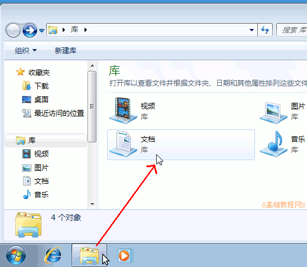
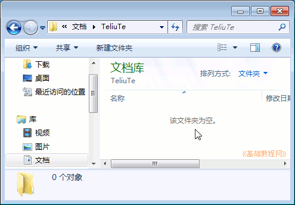

Windows7 基础入门教程
作者：TeliuTe 来源：基础教程网
四、新建文件夹 返回目录 下一课在电脑中一般要给自己建一个文件夹，把自己的文件都放在这里面，这样容易查找，也不容易丢失，下面我们来看一个练习；
1、打开库文件夹
1）点任务栏中的文件夹图标，打开库文件夹窗口，再双击打开里面的“文档”；

2）在文件夹空白处点右键，在出来的菜单中，选择下边的“新建－文件夹(F)”命令；
3）这时出来一个新建文件夹，名称那儿是蓝色的，按退格键删除里面的“新建文件夹”，
4）然后输入自己姓名的拼音，输好后再用鼠标点一下旁边的图标，或在空白处点一下，这样一个自己名字的文件夹就建好了；
5）在图标上双击左键，进入文件夹里看一下，由于是新建的文件夹，里头还是空的，后面我们会逐渐保存自己的文件；

2、练习
1）在库文件夹的空白处敲右键，点“刷新”命令；
2）在库文件夹的空白处敲右键，选择“查看－大图标”命令，再选回“平铺”；
本节学习了新建文件夹的基础知识，如果你成功地完成了练习，请继续学习下一课内容；
本教程由86团学校TeliuTe制作|著作权所有
基础教程网：>http://teliute.org/
美丽的校园……
转载和引用本站内容，请保留版权信息和本站链接。